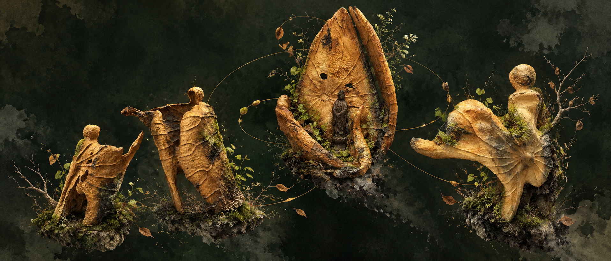
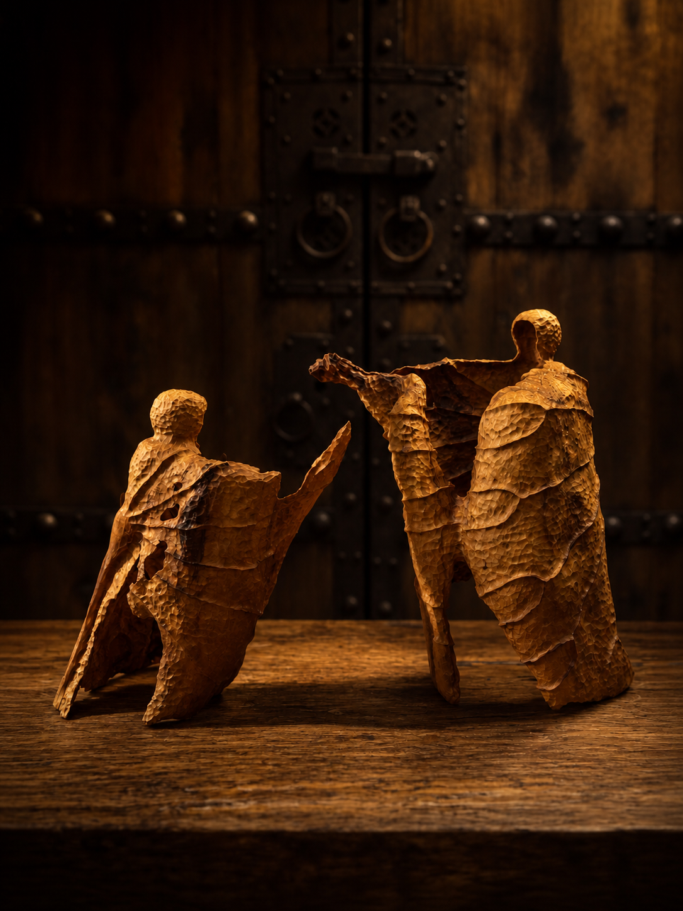

01
UNDERSTAND THE SCRIPT
劇本版
看見妳如何走到今天。梳理性格、關係與反覆出現的模式。讓那些「我怎麼又來到這裡」第一次有了可以理解的脈絡。
先讀一頁示意
給正在找回自己的妳
不是預測未來。
是讀懂妳怎麼走到今天。
The Compass · 01
八字、紫微斗數、西洋占星與人類圖，不替妳定義人生。浮生羅盤把四套系統放在一起，找出共同指向，也保留彼此不同的聲音。
「不是告訴妳會發生什麼，
而是陪妳看見：當事情發生時，
妳總是怎麼回應。」
Four Languages · One Life
看生命能量如何流動，妳慣常怎麼使力。
看角色與人生場景，妳在哪裡容易重複。
看內在需求與張力，理解矛盾從何而來。
看決策方式與能量邊界，練習適合妳的選擇。
先不用相信。
把報告帶回妳的生活驗證。
Two Ways of Reading · 02
先理解妳怎麼走到今天，再看下一次可以怎麼不同。兩份報告不是深淺之分，而是妳此刻需要的方向不同。
UNDERSTAND THE SCRIPT
梳理性格、關係與反覆出現的模式。讓那些「我怎麼又來到這裡」第一次有了可以理解的脈絡。
先讀一頁示意
LOOSEN THE PATTERN
找出困住妳的自我敘事與慣性迴圈。不是要求妳立刻改變，而是多看見一個新的入口。
看看破局怎麼讀不知道選哪一版也沒關係。
先從免費的四盤總覽開始。
父親留下的木雕，
後來成了我
理解人的方式。
Notes on Living · 03
看見戲，解開碼，回到家。
開始我的人生羅盤 ↗